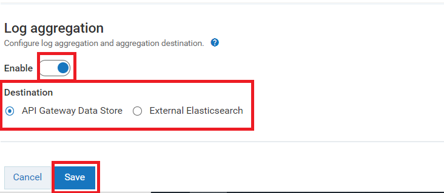

Configuring Log Aggregation
You can configure log aggregation such that the logs from different components can be stored at a single location in a common format. You can select any of the following destinations to store the aggregated data:

API Data Store
Elasticsearch, in case you have an external Elasticsearch configured with
API GatewayLog aggregation collects log from the different components and stores them either in API Data Store or external Elasticsearch based on the log aggregation configuration settings. If the API Data Store is configured as the destination the aggregated logs are displayed in the API Gateway dashboard under the Analytics > Application logs tab. You can filter the logs as required and search for a particular log in the dashboard.
Note:
If you configure to send the logs to the same API data store, which stores the API Gateway's core data (APIs & configurations), then it is very important to setup the data housekeeping in place since the log data grows over time in volume and will start to impact
API Gateway's performance. For more information on log housekeeping practices, see
Logs Housekeeping. Alternatively (also a better approach for production environments), logs can be sent to an External Elasticsearch.
Prerequisite:You must have the Manage general administration configurations functional privilege to:
Enable the log aggregation and
Configure the destination for log aggregation

To configure log aggregation
1. Expand the menu options icon  in the title bar, and select Administration.
in the title bar, and select Administration. 2. Select General > Application logs.
3. In the Log aggregation section, click the toggle button to change the status to  and enable the log aggregation.
and enable the log aggregation. 4. Select one of the following destination:
API Gateway Data Store: Select this to set API Data Store as destination to store the aggregated logs and you can view them in the
API Gateway dashboard
External Elasticsearch. Select this to set the external Elasticsearch as destination to store the aggregated log. This approach helps to separate the Elasticsearch that stores the
API Gateway core data from the aggregated log . But, if you use the external Elasticsearch, you must create your own dashboard to view the logs.
Note:
Make sure you have configured an external Elasticsearch with API Gateway.
Provide the following information:
Field Name | Description |
Protocol | The type of protocol (HTTP, HTTPS) to use for the host and port combination. |
Hostname | Specifies the host name or IP address of the machine on which Elasticsearch resides. |
Port | Specifies the port where Elasticsearch server runs. |
Indexname | Specifies the index of the collected logs. |
Username | Specifies the Elasticsearch user ID for authenticating Elasticsearch when API Gateway communicates with it. |
Password | Specifies the password of the Elasticsearch instance to be used for establishing communication between API Gateway and Elasticsearch. |
5. Click Save.
The selected destination is now configured for log aggregation.